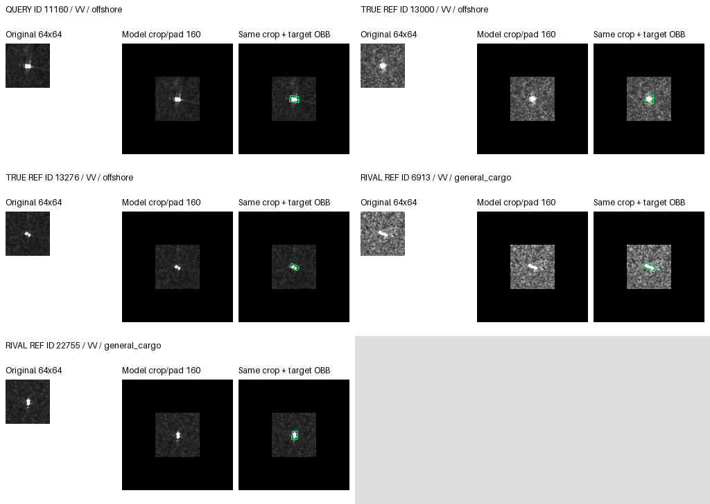
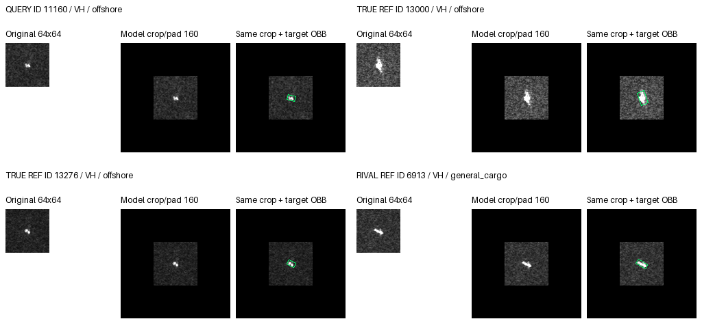
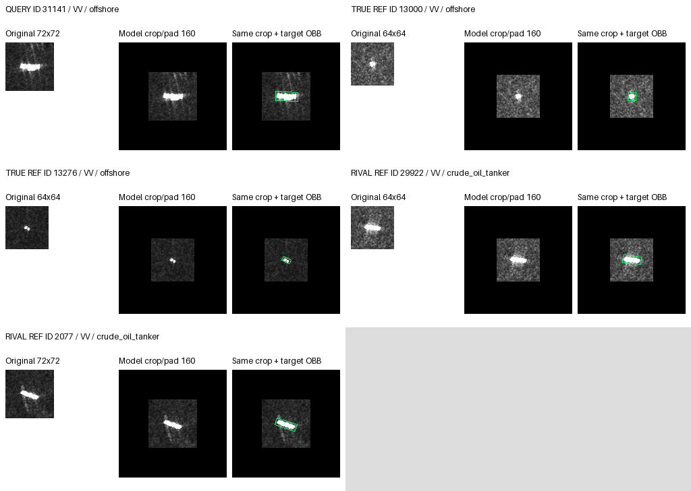

VV/VH separate; original pixels and exact crop/pad; separate OBB overlay. Rendered, not visually reviewed.
{
"arm": "source_mix",
"reference": "adapt_only",
"seeds": [
17,
29,
43
],
"absent": [
{
"state": "harmed",
"state_events": 0,
"reason": "No events in this state."
}
],
"cases": 3,
"panels": 6,
"visual_status": "not_reviewed",
"rule": "One distinct query/state, ordered by state frequency, absolute fixed-rival margin change, ID, seed. No random sampling.",
"references": "Actual fixed reference manifest; exclude identical ID/MMSI; first two same/rival class entries in bank order. No resizing.",
"limitation": "Outcome-selected examples are not population proportions. Bank order is not learned attention ranking. No new per-reference attention trace or physical causal evidence."
}{
"id": "5125",
"label": 0,
"seed": 17,
"state": "rescued",
"old": 3,
"new": 0,
"changed": true,
"rival": 3,
"margin_change": 0.15921178460121155,
"arm": "source_mix",
"reference": "adapt_only",
"state_orders": 1,
"dataset": "private",
"visual_status": "not_reviewed",
"class_name": "bulk_carrier",
"rival_name": "chemical_tanker",
"mmsi": "258251000",
"pass_group": "S1A_060692_078D67",
"port": "Port Klang",
"orders": [
{
"seed": 17,
"saved_baseline": {
"prediction": 0,
"logits": [
1.125460147857666,
-7.6833815574646,
-5.800391674041748,
0.6944369077682495,
-5.714250087738037,
-5.402833938598633,
-11.68794059753418,
-18.459312438964844
],
"truth_rival_margin": 0.4310232400894165
},
"adapt_only": {
"prediction": 3,
"logits": [
0.4336608350276947,
-7.786747455596924,
-6.144257545471191,
0.5073764324188232,
-5.599128723144531,
-5.913086891174316,
-11.113385200500488,
-17.619674682617188
],
"truth_rival_margin": -0.07371559739112854
},
"source_mix": {
"prediction": 0,
"logits": [
0.6244087815284729,
-7.7578887939453125,
-6.016412734985352,
0.5389125943183899,
-5.639815807342529,
-5.5703301429748535,
-11.096930503845215,
-17.894948959350586
],
"truth_rival_margin": 0.08549618721008301
},
"state": "rescued"
},
{
"seed": 29,
"saved_baseline": {
"prediction": 3,
"logits": [
1.1325985193252563,
-7.183034420013428,
-5.972494125366211,
2.6659789085388184,
-2.4699959754943848,
-3.0808064937591553,
-10.990816116333008,
-18.747079849243164
],
"truth_rival_margin": -1.533380389213562
},
"adapt_only": {
"prediction": 3,
"logits": [
0.5064465999603271,
-7.116711616516113,
-6.132308483123779,
2.3299038410186768,
-2.5208451747894287,
-3.3431010246276855,
-10.18404483795166,
-17.807600021362305
],
"truth_rival_margin": -1.8234572410583496
},
"source_mix": {
"prediction": 3,
"logits": [
0.7966002821922302,
-7.111039161682129,
-5.885056495666504,
2.298680305480957,
-2.4288828372955322,
-3.2974727153778076,
-10.308500289916992,
-18.052234649658203
],
"truth_rival_margin": -1.5020800232887268
},
"state": "WW"
},
{
"seed": 43,
"saved_baseline": {
"prediction": 0,
"logits": [
1.3223145008087158,
-7.431171894073486,
-4.501837253570557,
0.9323295950889587,
-5.8812055587768555,
-3.6061723232269287,
-11.799626350402832,
-17.646291732788086
],
"truth_rival_margin": 0.3899849057197571
},
"adapt_only": {
"prediction": 0,
"logits": [
0.8207977414131165,
-7.386662006378174,
-4.808777809143066,
0.7810061573982239,
-5.766918182373047,
-3.894953727722168,
-11.36513614654541,
-17.18647003173828
],
"truth_rival_margin": 0.03979158401489258
},
"source_mix": {
"prediction": 0,
"logits": [
0.892924964427948,
-7.364881992340088,
-4.7013373374938965,
0.8387595415115356,
-5.701423645019531,
-3.76188325881958,
-11.31454086303711,
-17.223220825195312
],
"truth_rival_margin": 0.054165422916412354
},
"state": "CC"
}
],
"panels": {
"vv": {
"file": "rescued_5125_vv.png",
"same_class_candidates": 2,
"rival_candidates": 2,
"shown_reference_ids": [
"34478",
"31512",
"24527",
"7790"
],
"query_available": true,
"same_class_usable": 2,
"rival_usable": 2
},
"vh": {
"file": "rescued_5125_vh.png",
"same_class_candidates": 2,
"rival_candidates": 2,
"shown_reference_ids": [
"34478",
"31512",
"24527",
"7790"
],
"query_available": true,
"same_class_usable": 2,
"rival_usable": 2
}
},
"all_legal_reference_ids": [
"34478",
"31512",
"14814",
"16401",
"6913",
"22755",
"24527",
"7790",
"36308",
"23719",
"29922",
"2077",
"12041",
"7429",
"13000",
"13276"
]
}

{
"id": "11160",
"label": 7,
"seed": 29,
"state": "CC",
"old": 7,
"new": 7,
"changed": false,
"rival": 2,
"margin_change": -0.6170332431793213,
"arm": "source_mix",
"reference": "adapt_only",
"state_orders": 3,
"dataset": "private",
"visual_status": "not_reviewed",
"class_name": "offshore",
"rival_name": "general_cargo",
"mmsi": "356659000",
"pass_group": "S1A_058688_074483",
"port": "Jebel Ali",
"orders": [
{
"seed": 17,
"saved_baseline": {
"prediction": 7,
"logits": [
-3.8388113975524902,
-4.207819938659668,
1.1766607761383057,
1.6818389892578125,
-4.035914897918701,
-10.078320503234863,
-1.7034581899642944,
6.07246208190918
],
"truth_rival_margin": 4.895801305770874
},
"adapt_only": {
"prediction": 7,
"logits": [
-4.690489768981934,
-4.474828243255615,
0.9491249322891235,
1.3055431842803955,
-3.879178524017334,
-10.506097793579102,
-1.2848659753799438,
6.922155857086182
],
"truth_rival_margin": 5.973030924797058
},
"source_mix": {
"prediction": 7,
"logits": [
-4.496938705444336,
-4.422176361083984,
0.9600076079368591,
1.3844008445739746,
-3.970682382583618,
-10.219476699829102,
-1.304666519165039,
6.554948329925537
],
"truth_rival_margin": 5.594940721988678
},
"state": "CC"
},
{
"seed": 29,
"saved_baseline": {
"prediction": 7,
"logits": [
-4.301331043243408,
-3.089466094970703,
1.6427992582321167,
1.333059310913086,
-2.826394557952881,
-6.805405616760254,
-2.105926513671875,
4.97068977355957
],
"truth_rival_margin": 3.3278905153274536
},
"adapt_only": {
"prediction": 7,
"logits": [
-5.038211345672607,
-3.420358419418335,
1.2778639793395996,
0.8633755445480347,
-2.913717269897461,
-7.0689311027526855,
-1.4183833599090576,
6.008538722991943
],
"truth_rival_margin": 4.730674743652344
},
"source_mix": {
"prediction": 7,
"logits": [
-4.7622575759887695,
-3.3720741271972656,
1.5715763568878174,
0.8536706566810608,
-2.8337647914886475,
-7.025767803192139,
-1.5990301370620728,
5.68521785736084
],
"truth_rival_margin": 4.1136415004730225
},
"state": "CC"
},
{
"seed": 43,
"saved_baseline": {
"prediction": 7,
"logits": [
-3.2637734413146973,
-4.811009883880615,
2.4143149852752686,
2.0409977436065674,
-4.83021879196167,
-7.775720596313477,
-2.266031265258789,
5.484622001647949
],
"truth_rival_margin": 3.0703070163726807
},
"adapt_only": {
"prediction": 7,
"logits": [
-3.812346935272217,
-4.846701145172119,
2.08601450920105,
1.8439576625823975,
-4.70192289352417,
-8.168503761291504,
-1.9021759033203125,
5.991802215576172
],
"truth_rival_margin": 3.905787706375122
},
"source_mix": {
"prediction": 7,
"logits": [
-3.7552130222320557,
-4.78877592086792,
2.1230719089508057,
1.919695496559143,
-4.658205032348633,
-8.082881927490234,
-1.9033496379852295,
5.829713344573975
],
"truth_rival_margin": 3.706641435623169
},
"state": "CC"
}
],
"panels": {
"vv": {
"file": "CC_11160_vv.png",
"same_class_candidates": 2,
"rival_candidates": 2,
"shown_reference_ids": [
"13000",
"13276",
"6913",
"22755"
],
"query_available": true,
"same_class_usable": 2,
"rival_usable": 2
},
"vh": {
"file": "CC_11160_vh.png",
"same_class_candidates": 2,
"rival_candidates": 1,
"shown_reference_ids": [
"13000",
"13276",
"6913"
],
"query_available": true,
"same_class_usable": 2,
"rival_usable": 1
}
},
"all_legal_reference_ids": [
"34478",
"31512",
"14814",
"16401",
"6913",
"22755",
"24527",
"7790",
"36308",
"23719",
"29922",
"2077",
"12041",
"7429",
"13000",
"13276"
]
}

{
"id": "31141",
"label": 7,
"seed": 17,
"state": "WW",
"old": 5,
"new": 5,
"changed": false,
"rival": 5,
"margin_change": -0.7620584890246391,
"arm": "source_mix",
"reference": "adapt_only",
"state_orders": 3,
"dataset": "private",
"visual_status": "not_reviewed",
"class_name": "offshore",
"rival_name": "crude_oil_tanker",
"mmsi": "565709000",
"pass_group": "S1A_060268_077D6F",
"port": "Singapore",
"orders": [
{
"seed": 17,
"saved_baseline": {
"prediction": 5,
"logits": [
-0.776034414768219,
-8.783143997192383,
-4.392059326171875,
-4.652101039886475,
-6.545523643493652,
0.01756366714835167,
-9.99997615814209,
-9.617546081542969
],
"truth_rival_margin": -9.63510974869132
},
"adapt_only": {
"prediction": 5,
"logits": [
-1.7323237657546997,
-8.83642578125,
-4.827552795410156,
-4.976332187652588,
-6.310080051422119,
-0.3977772295475006,
-9.410185813903809,
-8.713796615600586
],
"truth_rival_margin": -8.316019386053085
},
"source_mix": {
"prediction": 5,
"logits": [
-1.5324574708938599,
-8.90294075012207,
-4.7486958503723145,
-4.989511966705322,
-6.430325984954834,
-0.07722321897745132,
-9.456437110900879,
-9.155301094055176
],
"truth_rival_margin": -9.078077875077724
},
"state": "WW"
},
{
"seed": 29,
"saved_baseline": {
"prediction": 5,
"logits": [
-0.24565386772155762,
-8.186504364013672,
-5.297968864440918,
-2.6294195652008057,
-4.57336950302124,
0.4496285617351532,
-9.456830978393555,
-7.740225315093994
],
"truth_rival_margin": -8.189853876829147
},
"adapt_only": {
"prediction": 5,
"logits": [
-0.9927485585212708,
-8.389860153198242,
-5.7171220779418945,
-2.9980084896087646,
-4.729097366333008,
0.10691643506288528,
-8.594740867614746,
-6.418658256530762
],
"truth_rival_margin": -6.525574691593647
},
"source_mix": {
"prediction": 5,
"logits": [
-0.6768923401832581,
-8.347005844116211,
-5.295891284942627,
-3.036060333251953,
-4.608480453491211,
0.20212002098560333,
-8.767723083496094,
-6.646539688110352
],
"truth_rival_margin": -6.848659709095955
},
"state": "WW"
},
{
"seed": 43,
"saved_baseline": {
"prediction": 0,
"logits": [
0.9896817803382874,
-8.852337837219238,
-3.3062875270843506,
-3.475247383117676,
-3.8193647861480713,
-0.05061010271310806,
-9.385418891906738,
-7.88346004486084
],
"truth_rival_margin": -7.832849942147732
},
"adapt_only": {
"prediction": 0,
"logits": [
0.419462651014328,
-8.821367263793945,
-3.87009596824646,
-3.734727144241333,
-3.718163013458252,
-0.43862804770469666,
-8.892114639282227,
-7.246030330657959
],
"truth_rival_margin": -6.807402282953262
},
"source_mix": {
"prediction": 0,
"logits": [
0.4520587921142578,
-8.80190658569336,
-3.791134834289551,
-3.6663262844085693,
-3.6495068073272705,
-0.3016362488269806,
-8.859704971313477,
-7.415525913238525
],
"truth_rival_margin": -7.113889664411545
},
"state": "WW"
}
],
"panels": {
"vv": {
"file": "WW_31141_vv.png",
"same_class_candidates": 2,
"rival_candidates": 2,
"shown_reference_ids": [
"13000",
"13276",
"29922",
"2077"
],
"query_available": true,
"same_class_usable": 2,
"rival_usable": 2
},
"vh": {
"file": "WW_31141_vh.png",
"same_class_candidates": 2,
"rival_candidates": 2,
"shown_reference_ids": [
"13000",
"13276",
"29922",
"2077"
],
"query_available": true,
"same_class_usable": 2,
"rival_usable": 2
}
},
"all_legal_reference_ids": [
"34478",
"31512",
"14814",
"16401",
"6913",
"22755",
"24527",
"7790",
"36308",
"23719",
"29922",
"2077",
"12041",
"7429",
"13000",
"13276"
]
}